Сложная многостраничная печатная продукция
Написание скриптов и плагинов, которые позволяют ускорить подготовку макетов. Работа над макетами после оптимизации ускорилась в 1,5–2 раза.


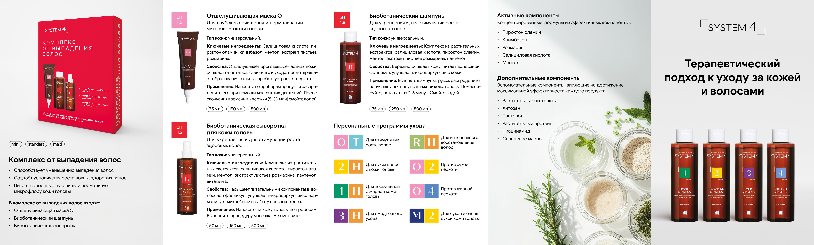
Дизайнер. Результаты и достижения 2024–2026
Оптимизация работы отдела
Сервис командной работы над визуальными проектами
До
Работа в медленном платном программном обеспечении, не позволявшем быстро проверять большое количество концепций и создавать версии под площадки SMM.
Это значительно замедляло процесс сборки макетов и тестирования концептов.
После
Оптимизация работы отдела
Тестирование, сравнение моделей и постоянная актуализация лучших решений под различные задачи
До
Это значительно затрудняло создание имиджевых рекламных изображений.
После
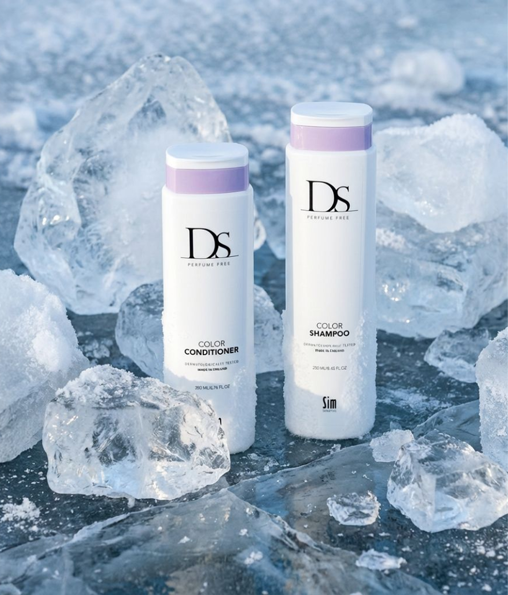
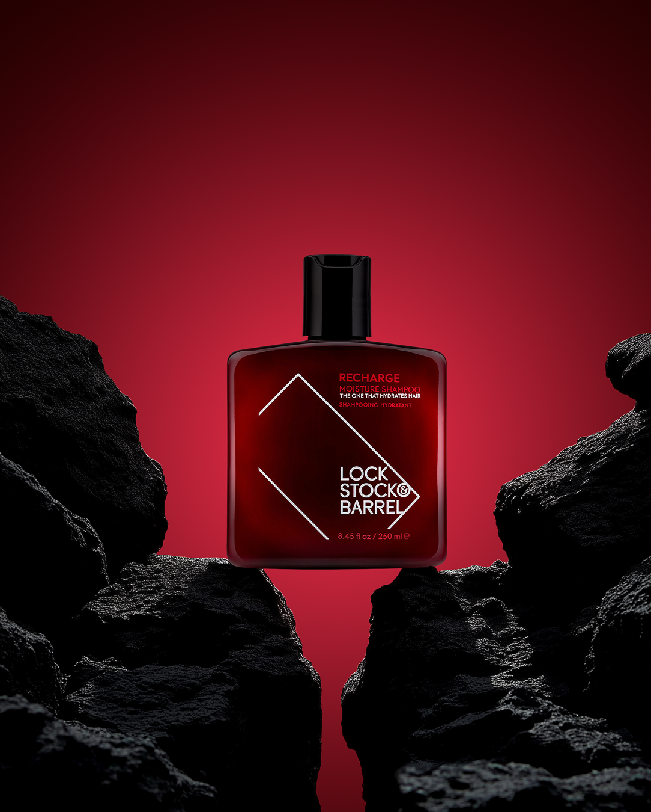
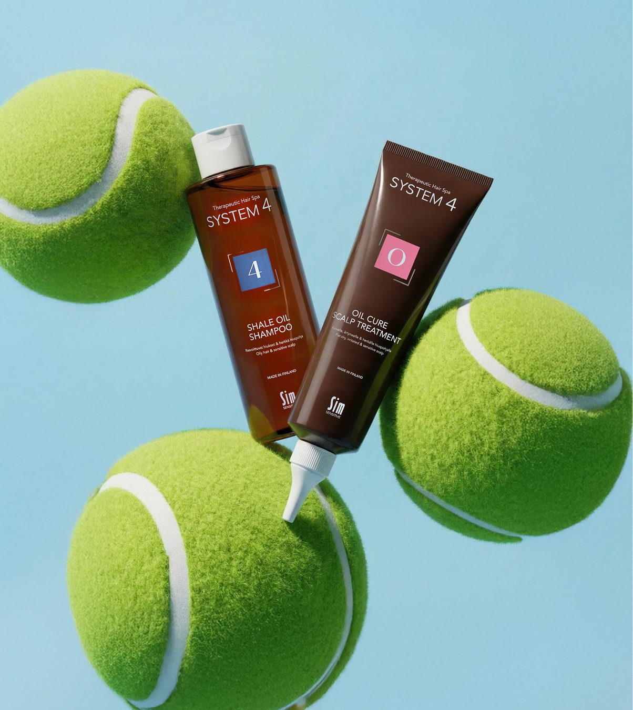
Оптимизация работы отдела
До
После
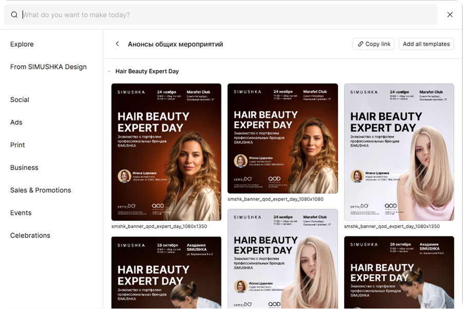
Оптимизация работы отдела
Личные изыскания и наработки регулярно переношу в отдел, проводя воркшопы и мастер-классы внутри отдела, консультирую менеджеров смежных отделов. Таким образом отдел дизайна и компания получает передовые технологии.
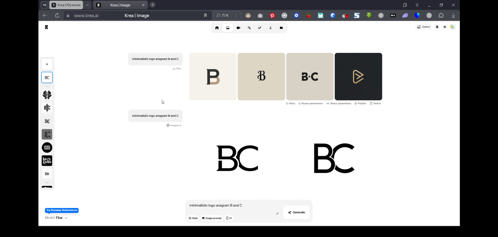
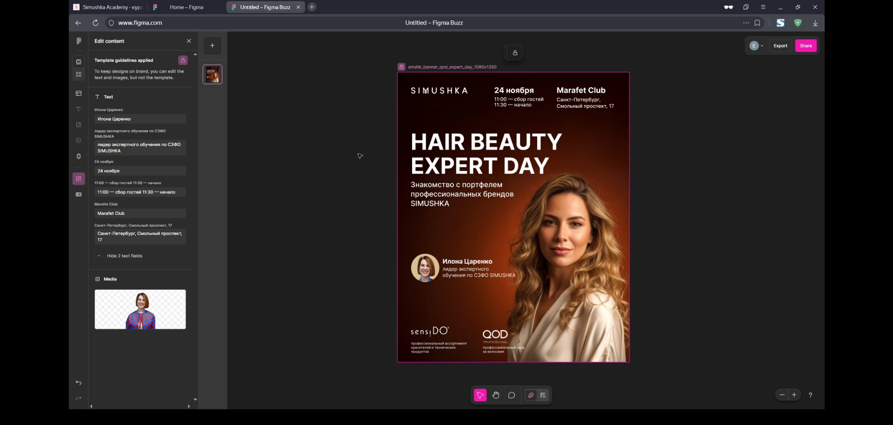
Направления работы
Опыт и насмотренность позволяет подхватывать задачи любого уровня. В каждом из направлений, представленных ниже, провёл улучшение процессов для упрощения и ускорения рутинных задач.
Написание скриптов и плагинов, которые позволяют ускорить подготовку макетов. Работа над макетами после оптимизации ускорилась в 1,5–2 раза.

Внедрение ИИ + знание основ 3D визуализации позволило поднять качество концепций на этапе дизайна.


Внедрение ИИ + перевод команды на Figma позволил ускорить работу над большим объёмом smm-визуалов.

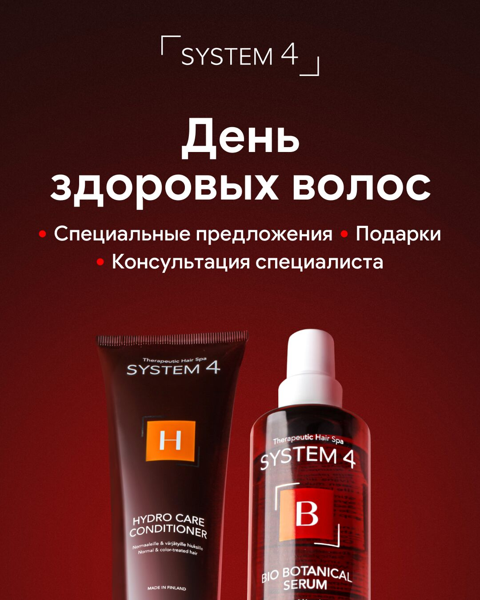
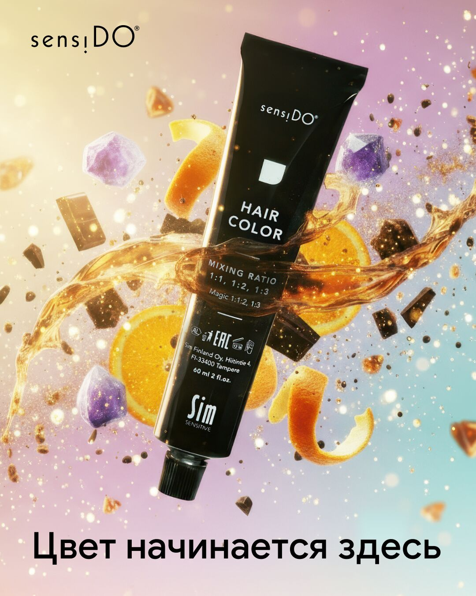

За счёт оптимизации инструментов, описанной ранее, скорость создания объёмных презентаций увеличилась в 5 раз. Это позволило сосредоточиться на качестве визуала, не отвлекаясь на ограничения программного обеспечения.
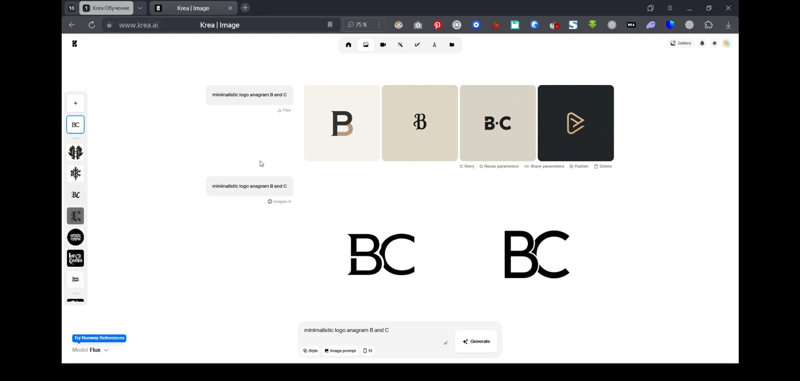
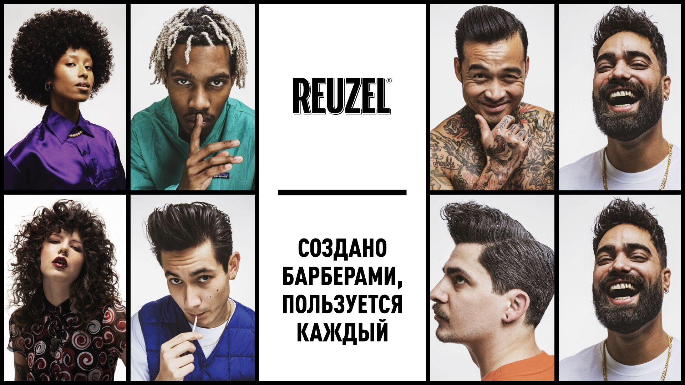

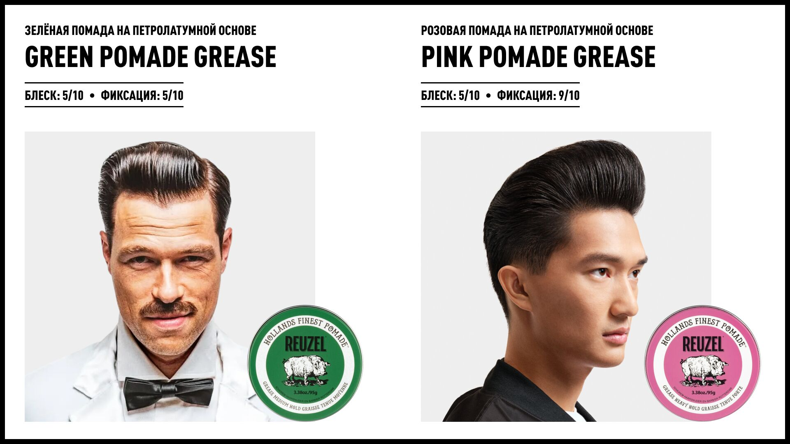


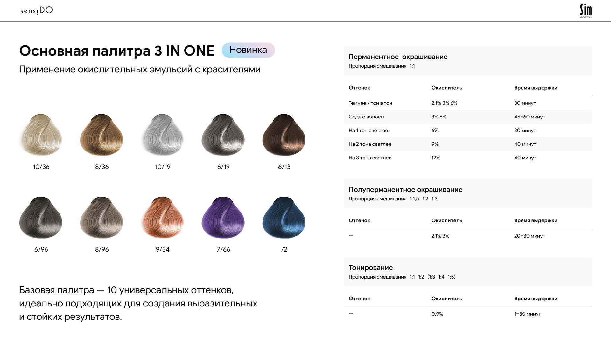
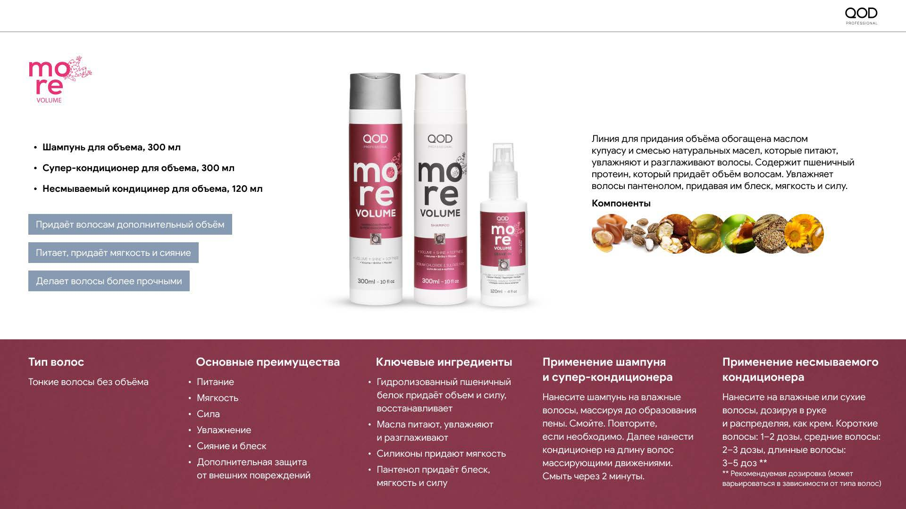
Дизайн-задачи требуют постоянного обновления оборудования, программного обеспечения и подписок профессиональных сервисов.
Итоги
Вышеописанные мероприятия по оптимизации личной работы и работы дизайн-отдела позволили мне выполнять с высокой эффективностью и скоростью объёмные и сложные дизайн-задачи, требующие глубокого погружения.
Прошу пересмотреть и увеличить мою заработную плату до: